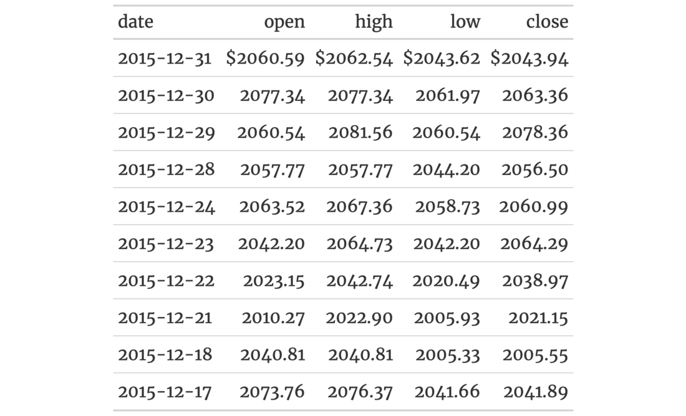
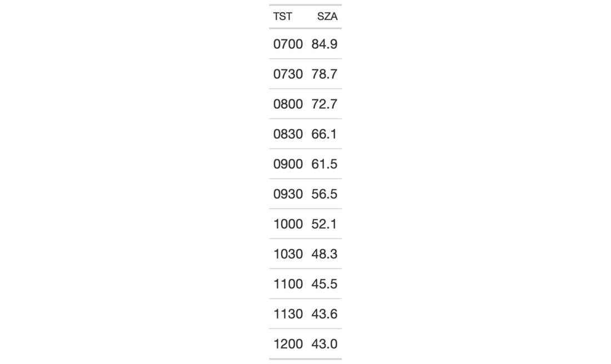

| opt_table_font {gt} | R Documentation |
The opt_table_font() function makes it possible to define a custom font for
the entire gt table. The standard fallback fonts are still set by default
but the font defined here will take precedence. You could still have
different fonts in select locations in the table, and for that you would need
to use tab_style() in conjunction with the cell_text() helper function.
We have the option to supply either a system font for the font_name, or, a
font available at the Google Fonts service by use of the google_font()
helper function.
opt_table_font(data, font, weight = NULL, style = NULL, add = TRUE)
data |
A table object that is created using the |
font |
Either the name of a font available in the user system or a call
to |
weight |
The weight of the font. Can be a text-based keyword such as
|
style |
The text style. Can be one of either |
add |
Should this font be added to the front of the already-defined
fonts for the table? By default, this is |
An object of class gt_tbl.


9-7
Other Table Option Functions:
opt_align_table_header(),
opt_all_caps(),
opt_css(),
opt_footnote_marks(),
opt_row_striping(),
opt_table_lines(),
opt_table_outline()
if (interactive()) {
# Use `sp500` to create a small gt table,
# using `fmt_currency()` to provide a
# dollar sign for the first row of monetary
# values; then, set a larger font size for
# the table and use the 'Merriweather' font
# (from Google Fonts, via `google_font()`)
# with two font fallbacks ('Cochin' and the
# catchall 'Serif' group)
tab_1 <-
sp500 %>%
dplyr::slice(1:10) %>%
dplyr::select(-volume, -adj_close) %>%
gt() %>%
fmt_currency(
columns = 2:5,
rows = 1,
currency = "USD",
use_seps = FALSE
) %>%
tab_options(table.font.size = px(18)) %>%
opt_table_font(
font = list(
google_font(name = "Merriweather"),
"Cochin", "Serif"
)
)
# Use `sza` to create an eleven-row table;
# within `opt_table_font()`, set up a
# preferred list of sans-serif fonts that
# are commonly available in macOS (using
# part of the `default_fonts()` vector as
# a fallback)
# and Windows 10
tab_2 <-
sza %>%
dplyr::filter(
latitude == 20 &
month == "jan" &
!is.na(sza)
) %>%
dplyr::select(-latitude, -month) %>%
gt() %>%
opt_table_font(
font = c(
"Helvetica Neue", "Segoe UI",
default_fonts()[-c(1:3)]
)
) %>%
opt_all_caps()
}